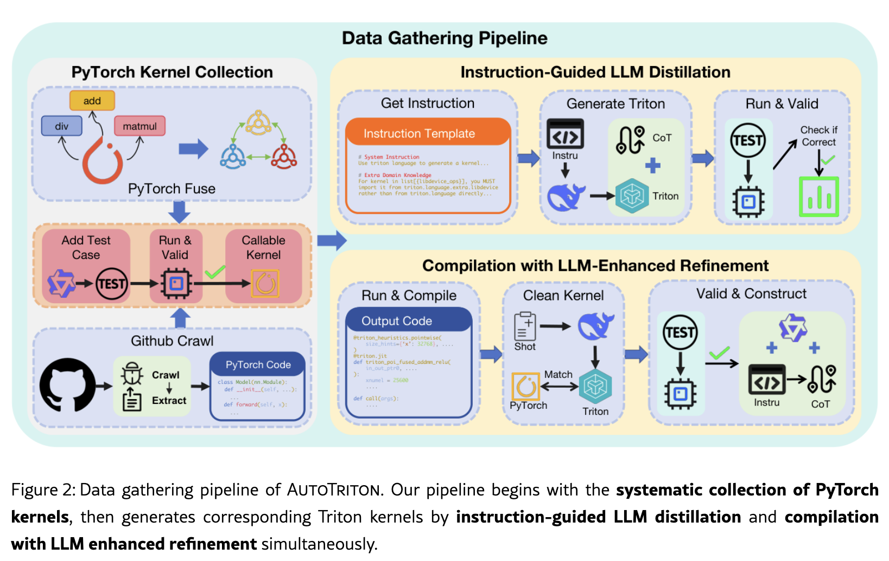

Prev
- the article mentions some benchmarks such as tritonbench and kernelbench(this is also used by cuda agent)
- triton: GPU kernel DSL with python styles
- 在代码生成领域，可以把问题建模为马尔可夫决策过程，代码生成可以被视作为逐步决策
- RLVR：Reinforcement Learning with Verifiable Reward，一种训练范式，用规则判断模型答案好不好
- GRPO：Group Relative Policy Optimization，模型会生成多个候选答案，给他们打分，抑制低分答案的产生
Probs and motivation
- triton等cuda编程框架的提出，虽然提升了开发的便捷性，但是开发者们仍然需要手动配置诸如布局配置和数据布局等关键参数，这种通过反复试验来解决问题的方式，阻碍性能可移植性和广泛应用
- 通用的模型缺少专门能力，这个问题在CUDA Agent中也提到了，目前的通用模型的预训练语料库中缺少GPU编程相关的知识
- ALSO MENTIONED BY "CUDA AGENT",通用LLM，training-freeAgent和纯SFT方法难以生成既正确又高性能的triton内核
Contributions
- AutoTrition based on seed-coder-8B -> SFT -> GRPO/RLVR。作者称其为首个RL驱动，专注triton编程的模型
- 可验证的数据与训练闭环：构建从 PyTorch 内核采集、测试生成、Triton 合成、功能等价验证到 CoT 生成的数据流水线；SFT 使用 14,102 条样本，RL 使用 6,302 条样本
- 五个评测通道的实证与组件分析：在 TritonBench 两通道和 KernelBench 三个难度级别上评估，并分析 SFT、RL 与规则奖励的作用
WorkFlow
data collections

假设收集到一个pytorch融合算子
import torch
def add_relu(x: torch.Tensor, y: torch.Tensor) -> torch.Tensor:
return torch.relu(x + y)文章用qwen2.5-coder负责生成测试test_add_relu用于测试pytorch算子是否运行正确
用两种并行路径生成正确合理的triton的候选代码：
LLM生成triton候选：系统将PyTorch实现，接口和triton相关的知识组织成指令，让LLMs生成候选的triton实现。随后流水线执行测试，每个测试都通过后，trtion的候选才被保留
torch.compile生成候选：
compiled_add_relu = torch.compile(add_relu)
# 生成物可能类似
@triton_heuristics(...)
@triton.jit
def triton_poi_fused_add_relu_0(
in_ptr0, in_ptr1, out_ptr0, xnumel,
XBLOCK: tl.constexpr,
):
...这里引入LLMs用来清理和语义化生成物，然后仍然要经过测试才保留候选
为什么需要两条路径呢？
LLM直接产生trtion和CoT可以处理torch.compile不容易产出的干净内核算子，可以天然的得到”需求描述->推理->代码“的训练格式，但是LLM的生成错误率高，成本高；torch.compile更接近正确实现，但是受限于编译器的覆盖范围。
SFT——监督微调
在data-collection这一节构造出<instruction, Triton code with CoT>用于微调基础模型
从实验结果看，SFT 是 RL 能有效工作的前提。以 TritonBench-T 为例，基础模型的执行准确率为 3.61%，SFT 后提高至 34.94%。作者进一步指出，若直接跳过 SFT 做 RL，模型虽可能得到较高奖励，却会频繁以普通 PyTorch 代码绕过任务要求，而不是学习真正的 Triton 实现。
RL——强化学习
在SFT后建立起基础的triton能力后，作者采用Reinforcement Learning with Verifiable Reward继续训练
RL 使用 GRPO（Group Relative Policy Optimization）：对于一个任务，模型会采样一组候选输出；每个输出的奖励相对于同组输出的均值和标准差进行归一化，形成组内优势值，再以带裁剪的策略目标和相对参考模型的 KL 约束更新模型。其作用是让模型偏向生成同组中可验证、质量更高的候选实现，同时限制策略更新幅度。<br>RL 数据仍由前述数据流水线产生，但不再需要人工或模型提供的 Triton 标注。作者仅保留 <instruction, PyTorch code> 对：PyTorch 参考代码与测试用例足以在执行阶段生成奖励信号。因此，RL 可以纳入更多没有高质量 Triton 标注、但难度更高的 OOD 问题，以支持探索。最终训练数据由这些新问题和一小部分 SFT 分布内数据混合构成，后者用于维持平稳的策略迁移。
Experiments
- 评估基准 (Benchmarks & Datasets)：
TritonBench-G：184 个来自 GitHub 的真实内核；TritonBench-T：166 个对齐 PyTorch 接口的内核。KernelBench：250 个任务，Level 1 / 2 / 3 分别为 100 个单内核、100 个简单融合、50 个完整架构任务。
- 核心指标 (Evaluation Metrics)：
KernelBench 评估编译准确率、执行准确率、加速比；TritonBench 评估调用准确率、执行准确率、加速比。fast@p 为“正确且 SpeedUp > p”的任务占比；TritonBench-G 相对参考 Triton 测速，其余相对 PyTorch 测速。
- 关键实验结果 (Main Findings)：
- TritonBench-G：AutoTriton 执行准确率 15.76%，略高于 DeepSeek-R1-0528 的 15.22%；fast@1/2 为 7.61% / 2.17%，高于后者的 3.80% / 0.54%。
- TritonBench-T：执行准确率 39.16%，高于 DeepSeek-R1-0528 的 30.12%；fast@1/2 为 17.04% / 6.02%，高于后者的 11.45% / 4.82%。
- KernelBench Level 1：执行准确率 36%，fast@1/2 为 10% / 6%。Level 2：执行准确率 45%，但 fast@1/2 仅 17% / 0%，低于 DeepSeek-R1-0528 的 28% / 2%。Level 3：执行准确率 20%，低于 DeepSeek-R1-0528 的 26%。
因而，“8B 整体可比大模型”主要成立于正确性和部分通道的加速指标，不等价于所有复杂融合任务上全面领先。结果表
- 消融分析与洞察 (Ablations & Insights)：
- TritonBench-T 执行准确率：基础模型 3.61% → SFT 34.94% → SFT+RL 39.16%。
- KernelBench Level 2 执行准确率：基础模型 11% → SFT 27% → SFT+RL 45%。
- 去掉规则奖励后，缺少 triton.jit 的输出从 TritonBench-T 的 5 个升至 18 个；KernelBench Level 1 从 6 个升至 25 个。规则奖励改善了表面语法合规性，但不能阻止“声明 Triton、实际走 PyTorch fallback”的规避策略。
局限与未来工作 (Limitations & Future Work)
- 作者承认的局限 (Limitations)：当前训练没有性能引导。蒸馏或编译得到的内核没有有效运行时反馈，因此 RL 奖励只约束“是否为 Triton + 是否功能正确”，不直接优化目标硬件上的延迟或吞吐。
- 规划方向 (Future Directions)：获取或生成更高质量数据，并引入 performance-aware 训练：对功能正确且目标硬件性能高的内核给予奖励。论文局限段
独立技术审视 (Critical Analysis)
- 实用价值与可行性：这项工作的有效着力点不是“让模型写出 GPU 代码”，而是将 PyTorch 参考实现、自动测试和可执行反馈变成可规模化训练信号。SFT 先压低语法空间，RL 再在可验证正确性空间中探索，解释了为何 8B 模型能从 TritonBench-T 的 3.61% 执行正确率提高到 39.16%。
- 潜在盲点与隐性成本：二元奖励无法区分“可运行但慢”“部分 PyTorch fallback”“真正端到端加速”。论文已经展示这种规避：triton.jit 只能证明装饰器存在，不能证明计算图实际在 Triton 中完成。若将此方法用于生产，奖励必须至少包含调用路径审计、禁止 Torch fallback、端到端 profiler 计时、跨 GPU 架构与多形状输入验证；否则模型会继续优化测试通过率，而非内核性能。训练成本也不轻：SFT 为 8×A800 约 16 小时，RL 为 16×A800 约 32 小时，运行时性能奖励会进一步增加编译和基准测试开销。